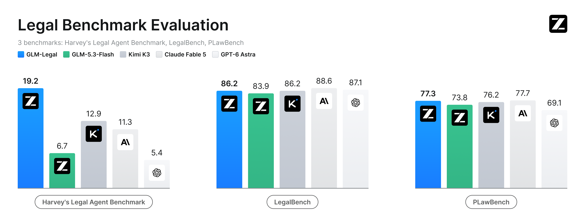
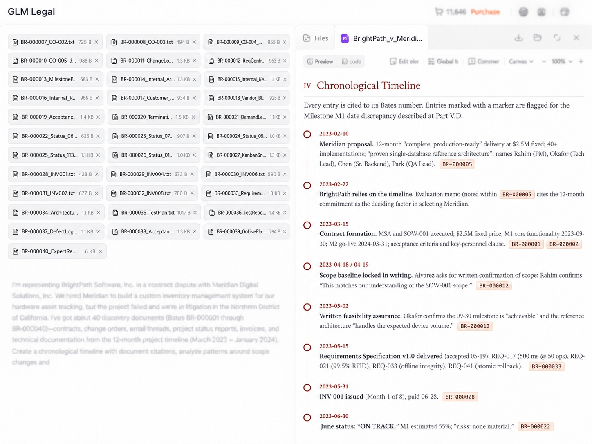

2026-10-12 · 领域支线 · Model × Harness
GLM-Legal
法律知识只是起点。用真实感法律环境、领域中训和模型/Harness共演化，把材料、论证与交付规范接成一条工作流。
19.2%Harvey LAB all-pass
+12.5 pp相对基座6.7%
Beta申请API；非已开放权重
知识 → 行动 → 交付
高质量法律语料建立领域基础；数万个真实感环境训练执行。Harness负责上下文、工具与反馈，训练失败反过来暴露编排瓶颈。
拒绝“漂亮答案”验收
分别检查关键事实遗漏、无依据引用、brief遵循、下游返工。19.2% all-pass仍意味着多数任务没有通过全部条件。
不能混排的成绩
LegalBench86.2、PLawBench77.3：都不是官方图内最高。此处Harvey LAB与Muse Wonder的LAB-AA不是相同口径。
研究实验
固定基座和预算，对比领域SFT、领域RL、Harness修复及组合；按错误来源定位收益，不只看最终平均分。

